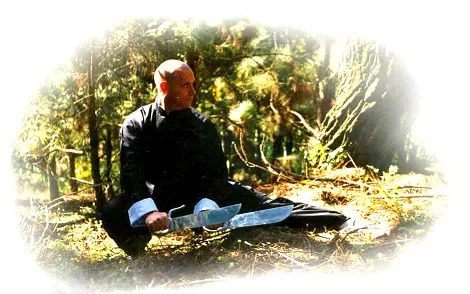

Kung Fu: Arte Marcial Chinesa
Por Thomas Pinheiro
O início do desenvolvimento das artes marciais chinesas teve, a princípio, sua origem em exercícios praticados por monges, cujo intuito era de manter seu físico em forma. Foram criados, para tanto, exercícios baseados em animais, com características apenas de trabalho físico, porém com o passar do tempo, esses monges sentiram necessidade de um sistema de arte marcial que lhes proporcionasse segurança durante suas viagens, de modo que aqueles movimentos passaram a ter uso marcial, com bloqueios, ataques, torções, etc... . Originou-se então a arte marcial do templo Shaolin, baseada em movimentos e comportamentos do tigre, da garça, do leopardo, da serpente e do dragão.
A forma de cada um desses animais proporcionou um desenvolvimento de essência diferente; o tigre, os ossos; o dragão, o espírito; o leopardo, a força; a serpente, a respiração; a garça, a energia. O estilo Shaolin começou a ser difundido, porém a cada indivíduo que sobressaía, este acabava criando ou melhorando alguma determinada técnica, em consequência, atribuía então o próprio nome ao estilo, ou algum nome que estivesse associado à característica do estilo praticado.
Surgiram, assim, variações de estilos de arte marcial por toda a China, muitas vezes, tinham até mesmo nome, mas que apresentavam características diferentes devido à região de sua prática. A proliferação dos estilos também estava relacionada às famílias, que normalmente praticavam e guardavam segredos de aprendizado entre si, sendo comum ensinar apenas a arte marcial da família a seus membros masculinos.
Houve muita mistura entre as artes marciais praticadas no templo Shaolin e praticadas por militares da época, que geralmente acontecia quando desertores do templo se dispunham a trocar informações. A arte marcial chinesa, atualmente pronunciada kung fu ou gung fu é um termo de referência, kung fu significa tempo de habilidade, ter habilidade em algo. Um cozinheiro habilidoso, por exemplo, ele tem kung fu. Um exímio lutador, ele possui kung fu. O termo em si acabou instituído e disseminado graças aos filmes chineses da década de 1970 que dele se utilizaram.